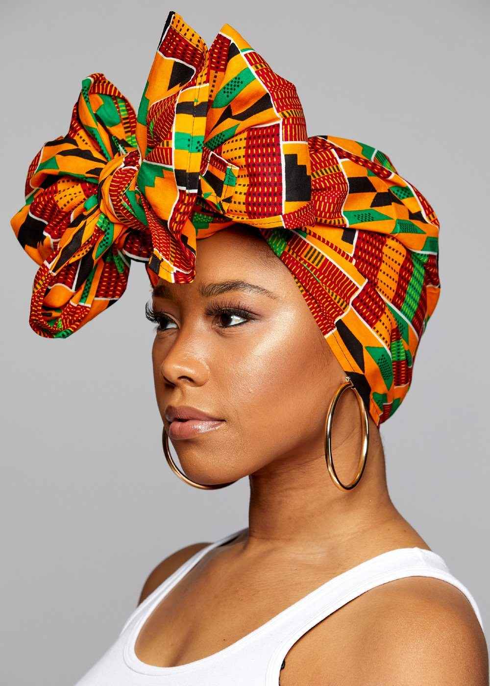
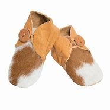

Beaded Auklets
Decorative accessories worm around the ankle,
mostly by girls and women during traditional dance.

Seshoeshoe Dress
Traditional dress for women made from a printed cotton fabric,
often worn at weddings and cultural events.

Beaded Belt
Colorful waist accessories made from small beads.
often worm by women during cultural
dances or ceremonies.

Beaded Bracelets
Wristwear made of beads,common among both men
and women during festivals or as gifts.

Beaded Necklace
Neckwear made from
colorful beads,worn during traditional
ceremonies or celebrations.

Dira Hat
A traditional hat,not as widely known as the Mokorotlo.
Often made from straw or
fabric,depending on region.

Embroided Hat
A hat decorated with
thread,beads,or fabric patterns.
Worn by women or elders during formal events.

Heagwrap
Similar to tuku:styled
wraps used by women,especislly for weddings,
dancing,or show respect. 
Herdboy
Worn by young boys tending
animals-including a blanket,stick(molamu),
wool cap,and sometimes gumboots.

Leather Sandals
Traditional footwear made from cowhide.Durable and
practical,especially in rural
areas.

Mokorotlo Hat
National symbol of Lesotho.
A cone-shaped hat made from grass,
representing unity and heritage.

Traditional Bag
Small hand-sewn bag made from
leather or fabric,used to carry personal
items like snuff or herbs.

seanamarena blanket
The Seana Marena
blanket is a culturally significant Basotho
heritage blanket, known as the "Royal Crown Jewel"
of Basotho blankets, made from
high-quality wool and acrylic,
with traditional designs symbolizing wealth,
fertility, and status.
.jpg)
seana marena
Seana Marena is a prestigious traditional Basotho blanket,
often regarded as the “Royal Crown
Jewel” of Basotho heritage, symbolizing status,
cultural pride, and ceremonial
significance.

ceremanial blanket
Established in 1953, Aranda Textile Mills is the oldest
blanket manufacturer in South Africa.
Aranda is one of the leading suppliers
of both décor blankets and throws.

kobo
This blanket pays homage to Basotho women for their artistic
use of Litema which are the geomatric patterns they use to
decorate their huts.

traditional blanket
These blankets have a deep cultural
significance and history. The world renowned
Basotho tribal blankets.

katiba
Katiba" is a Swahili term meaning "constitution," pivotal in legal,
civic, and political contexts, but it also appears in cultural
domains such as music.

kobo blanket
Rakuten Kobo offers daily deals on eBooks across
multiple genres, a variety of eReaders to enrich
your reading experience.

tuku
A tuku is a traditional Basotho women's headscarf, tied in various styles to symbolize respect, modesty,
age, or marital status.
sash
The Basotho sash, often a leather belt or hand-rolled
yarn 'Senyepa', is an essential
accessory that secures blankets or garments and can
carry deep cultural and ceremonial significance.
wool poncho
Authentic Basotho wool ponchos for women combine
traditional Basotho blanket patterns with high-quality
wool for warmth, style, and cultural significance,

molamu
The molamu is a traditional Basotho fighting stick
and cultural symbol representing manhood,
authority, protection.
balaclava
Older Basotho men especially the herders, wear woolen
caps or balaclavas to protect their heads from cold
and dust.The men also put on blankets made from animal skin.
lieta
Basotho men traditionally wear lieta tsa letlalo,
handcrafted cowhide sandals that are durable, reflective
of highland life. 
gumboots for basotho
Gumboots are an essential part of Basotho attire for
herding and outdoor activities, providing protection
against wet and rugged terrai.

traditional trousers
Traditional trousers are cultural garments that reflect heritage,
craftsmanship, and regional identity,
often designed with specific fabrics, patterns.

traditional shirt
Seshoeshoe, also known as Shweshwe, is a distinctive fabric
traditionally worn by Basotho women. T

wool capes
Basotho boys’ wool capes, known as Kobo, are iconic garments
made from thick blankets symbolizing cultural pride,
warmth, and social identity.

leather beld
High-quality leather belts for Basotho
are available locally from specialized artisans,
marketplaces.
wool shawl
Basotho wool shawls, often part of the
iconic Basotho Blanket tradition, are made from thick wool
to provide warmth while showcasing cultural identity.

beaded necklace
Basotho beaded necklaces are
vibrant cultural artifacts that carry deep social
and symbolic meaning.
beaded bracelets
Basotho beaded bracelets are a vibrant
expression of culture, identity, and craftsmanship,
combining symbolic meanings with colorful.
beaded anklets
The Basotho people of Lesotho are
renowned for their intricate beadwork, which serves as
both artistic expression and a means of communication.